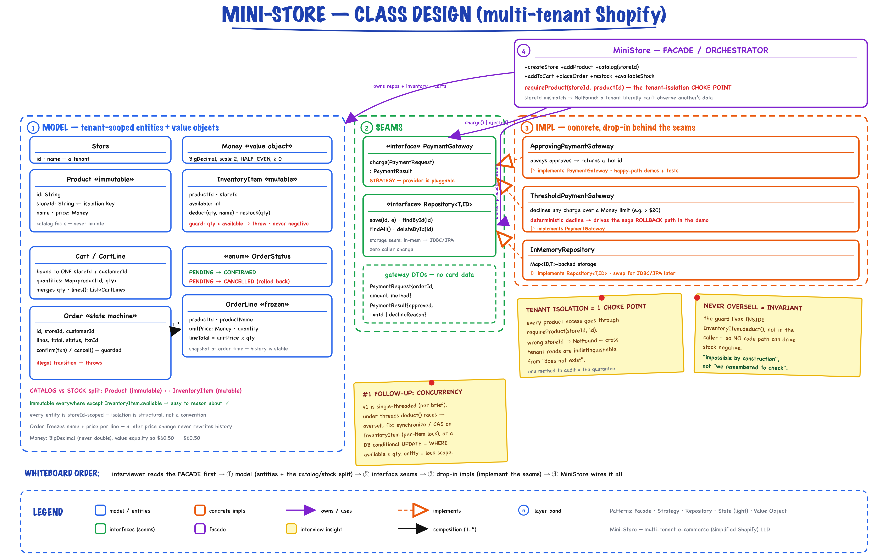
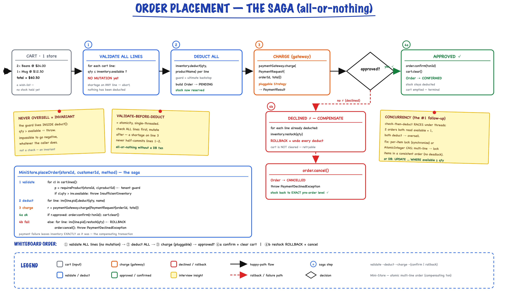

Mini-Store // Multi-Tenant E-Commerce (simplified Shopify)
A multi-tenant store platform: many stores (tenants), each with an isolated catalog and inventory, a per-store cart, and an all-or-nothing order flow behind a pluggable payment gateway. Tenant isolation is a single choke point; "never oversell" is an invariant, not a check; order placement is a compensating saga.
01 — Requirements
Read the question first. "Design a simplified Shopify" is really three signals in a trench coat: (1) tenant isolation — products are per-store and never shared, and that must be a hard guarantee, not a convention; (2) an inventory invariant — "never oversell" must be impossible by construction; (3) an order saga — validate → deduct → pay → (confirm | roll back), with payment behind an interface. The brief also tells you what to skip — no auth, no real payment, concurrency deferred, storage in-memory — so design the seams for those and say so out loud.
Functional (v1)
- Stores (tenants) — create a store; each has its own catalog
- Catalog + inventory — add a product (immutable catalog entry) and seed its stock; products are never shared across stores
- Cart — add/merge items, bound to exactly one store + customer
- Order — place an order for ≥1 products from a single store; validate + deduct inventory; inventory never goes negative
- Payment — pluggable gateway returning approve/decline
Non-Functional
- Tenant isolation as a correctness guarantee — a tenant cannot even observe another's data
- Accurate inventory — atomicity of the multi-line deduct; a decline leaves stock exactly as it was
- Extensible — new payment provider or storage backend = one new class (Open/Closed)
- Correct money — BigDecimal, never
double - Concurrency-ready — the entity is the lock boundary; v1 doesn't turn locking on (per brief) but names where it goes
Clarifying questions to ask first
- Can one order span multiple stores? (No — one order = one store; changes cart/order modeling)
- Are products ever shared between stores? (No — each store owns its catalog)
- Deduct stock at add-to-cart or at order? (At order placement; cart is a wish-list)
- Payment sync or async? (Sync for v1; gateway returns approve/decline)
- Concurrency required now? Storage? (Not up-front; in-memory behind a Repository)
02 — Core Entities
| Class | Layer | What it does internally |
|---|---|---|
| Store | model | A tenant: id + name. Every product, cart, order is scoped to one Store |
| Product | model | Immutable catalog entry; carries storeId — the isolation backbone. name + Money price |
| InventoryItem | model | Mutable stock; the "never oversell" guard lives in deduct(qty, name); restock(qty) |
| Cart / CartLine | model | Bound to ONE storeId + customerId; merges quantities per product |
| Order / OrderLine | model | Order = PENDING→CONFIRMED|CANCELLED state machine; OrderLine freezes name + unitPrice at order time |
| OrderStatus | model | Enum: PENDING, CONFIRMED, CANCELLED |
| Money | model | Value object: BigDecimal scale 2 (HALF_EVEN), value equality, never negative |
| PaymentGateway | service | Strategy seam: charge(PaymentRequest) → PaymentResult |
| PaymentRequest / PaymentResult | service | Gateway DTOs — no card data; result carries txnId or declineReason |
| Repository<T,ID> | service | Storage seam: save / findById / findAll / deleteById |
| InMemoryRepository | impl | Map-backed store; swap for JDBC/JPA later with zero caller change |
| ApprovingPaymentGateway | impl | Always approves — happy-path demos and tests |
| ThresholdPaymentGateway | impl | Declines any charge over a Money limit — deterministic decline to exercise the rollback |
| MiniStore | root | Facade/orchestrator: owns repos + inventory + carts; runs the flows; the isolation choke point |
03 — Design Patterns (with rejected alternatives)
Facade — MiniStore
One readable entry point over a multi-part subsystem (stores, catalog, inventory, carts, orders, payment). Not a God object — the real logic (the isolation guard, the saga, the inventory invariant) lives in the entities and the flow; the facade only coordinates and holds the wiring.
Strategy — PaymentGateway
The brief literally asks for a pluggable payment abstraction. The order flow depends only on PaymentGateway, so Stripe / PayPal / a test double are drop-ins; the demo even swaps it at runtime with setPaymentGateway. Rejected: an if (provider == ...) switch inside placeOrder — couples the flow to every provider forever.
Repository — storage seam
Repository<T,ID> answers "in-memory OR relational, don't worry about scale". The whole platform talks to the interface, never a concrete map, so "now put it in Postgres" is one new class. Rejected: raw Map fields sprinkled through the facade — no migration path.
State (lightweight) — Order
confirm() / cancel() validate the transition: a CONFIRMED order can't be silently re-cancelled or double-confirmed — illegal moves throw. Chose an enum + guarded methods over full GoF State because the lifecycle is linear and states carry no per-state behavior.
Value Object — Money
Correctness (never double for money) and value equality so $60.50 == $60.50. BigDecimal at scale 2, non-negative by construction. Small, but interviewers notice when money is a double.
Compensating transaction (Saga)
Order placement is a mini-saga: a payment decline triggers a compensating restock that undoes every deduction. Not a GoF pattern — but naming the saga / compensating-transaction shape is senior signal, and it's the design's crown jewel (§06).
04 — Class Diagram

Layer bands: MODEL (Store, Product/InventoryItem catalog-vs-stock split, Cart, Order/OrderLine, Money) → SEAMS (PaymentGateway [Strategy], Repository) → IMPL (InMemoryRepository, Approving/Threshold gateways implement the seams) → MiniStore FACADE, whose requireProduct is the tenant-isolation choke point. This is the whiteboard diagram at minute ~10.
Read the diagram in the room: the interviewer sees the MiniStore facade first; the model entities are all storeId-scoped and immutable except InventoryItem.available; two interface seams (payment, storage) make providers swappable; the concrete impls plug in behind them. The single red callout — requireProduct(storeId, productId) — is the whole tenancy story in one method.
05 — Multi-Tenancy (the part they're testing)
Name all three tenancy models, pick one, justify. The isolation guarantee then collapses to a single choke point you can audit in one place.
Three models — and why shared-schema for v1
| Model | Isolation | Cost / when |
|---|---|---|
| Shared-schema, tenant-scoped (chosen) | enforced in code — every row carries storeId, every read filters by it | cheapest, simplest; best for v1 |
| Schema-per-tenant | stronger | more ops overhead |
| Database-per-tenant | strongest (compliance) | heaviest to run |
The choke point — one method to audit
Every product access — cart add, stock check, order line — goes through MiniStore.requireProduct(storeId, productId). It rejects any product whose storeId ≠ the caller's store as NotFound, so cross-tenant access is indistinguishable from "does not exist".
private Product requireProduct(String storeId, String productId) { requireStore(storeId); Product p = products.findById(productId); if (p == null || !p.storeId().equals(storeId)) { throw new NotFoundException("product '" + productId + "' not found in store " + storeId); } return p; }
Demo scenario 4: an Acme customer tries to add Globex's "Dune" to their cart → NotFound. Globex's product simply does not exist for the Acme tenant. Isolation is a correctness guarantee, not a filter someone might forget.
06 — The Order Saga (all-or-nothing)

cart → ① validate ALL lines' stock (no mutation) → ② deduct ALL → ③ charge via the pluggable gateway → ④a approved: confirm + clear cart, or ④b declined: RESTOCK rollback + cancel (the red dashed compensating path). Payment failure leaves inventory exactly as it was.
Why validate-before-deduct
Validate every line first, mutate after. A shortage on line 3 never half-commits lines 1–2 — that split is what makes a multi-line order atomic single-threaded, without a database transaction. Then on a payment decline, a compensating restock returns stock to its exact pre-order level.
// 1. validate EVERY line's stock first — NO mutation yet for (CartLine cl : cart.lines()) { Product p = requireProduct(storeId, cl.productId()); // tenant guard if (cl.quantity() > inv.available()) throw new InsufficientInventoryException(...); } // 2. now deduct all (safe: already validated) for (OrderLine l : lines) inventory.get(l.productId()).deduct(l.quantity(), l.productName()); // 3. charge via the pluggable gateway PaymentResult r = paymentGateway.charge(new PaymentRequest(order.id(), total, method)); if (!r.approved()) { // 4b. COMPENSATE — roll back every deduction for (OrderLine l : lines) inventory.get(l.productId()).restock(l.quantity()); order.cancel(); orders.save(order.id(), order); throw new PaymentDeclinedException(order.id(), r.declineReason()); } order.confirm(r.transactionId()); // 4a. success: confirm + clear cart orders.save(order.id(), order); cart.clear();
Decisions to narrate
- Order built after deduct, marked PENDING — it exists only once stock is reserved; payment resolves it to exactly one terminal state
- Cart cleared only on success — a declined order keeps the cart, so the customer can retry (demo scenario 6 swaps the gateway back to approving and the same cart succeeds)
- Decline is a value, not a crash —
PaymentResult.declined(reason)drives the compensating branch; the exception is thrown to the caller only after rollback + cancel
07 — The Inventory Invariant
"Never oversell" is an invariant, not a caller check. The guard lives inside InventoryItem.deduct(), so no code path — order flow, admin adjustment, future feature — can drive stock negative. One rule, centrally enforced.
Catalog vs stock — two objects on purpose
Product holds the immutable catalog facts (name, price); InventoryItem holds the mutable stock count. A sale changes stock, not the product — so they don't share a class. Splitting them keeps everything else immutable and easy to reason about.
public void deduct(int qty, String productName) { if (qty <= 0) throw new IllegalArgumentException("quantity must be positive"); if (qty > available) { throw new InsufficientInventoryException(productName, qty, available); } available -= qty; // cannot go negative — the guard is here, once }
Demo scenario 3: Bob orders 99 mugs when 4 remain → InsufficientInventoryException, and because validation happens before any deduct, stock is unchanged — no partial commit.
08 — Concurrency & Thread-Safety
v1 is single-threaded by design (per the brief), but the seam is ready and this is almost always the first follow-up. State the race precisely, then give the fixes cheapest-first.
The race
Under threads, check-then-deduct is a TOCTOU bug: two orders both read available = 1, both pass the check, both decrement → oversell. The entity boundary is already the natural lock boundary, so the fix is local.
| Fix | How | Trade-off |
|---|---|---|
| Per-item lock | synchronized deduct/restock on InventoryItem | fine-grained — different products don't contend; cheapest change |
| CAS loop | AtomicInteger available; while(!cas(cur, cur-qty)) | lock-free; retry under contention |
| Multi-line order | acquire per-item locks in a consistent global order (sort by productId) | avoids deadlock — same trick as the wallet-transfer problem |
| Move to a DB | conditional UPDATE inventory SET available=available-? WHERE product_id=? AND available>=?, check rows-affected | the DB enforces the invariant atomically — no app lock at all |
The registry itself (InMemoryRepository) is a simple map today; under concurrency you'd swap in a ConcurrentHashMap or push writes down to the DB. Because everything sits behind Repository<T,ID>, that's a one-class change.
09 — Interview Q&A (the 90-min round lives here)
| Follow-up | Answer |
|---|---|
| Make it thread-safe. | Name the check-then-deduct race, then fix cheapest-first: synchronized/CAS on InventoryItem (per-item lock), consistent lock ordering for multi-line orders, or a DB conditional update. Entity = lock boundary, so it's small (§08). |
| Reserve stock at add-to-cart with a timeout? | Add a reserved bucket to InventoryItem (available/reserved), reserve on add with a TTL, release on expiry or confirm-on-order. Turns overselling-under-slow-checkout into a non-issue — how real carts work. |
| Payment is actually async (webhook). | Order stays PENDING; gateway returns a pending handle; a webhook later flips it CONFIRMED/CANCELLED. Add a PENDING_PAYMENT state and an idempotent handler keyed by transactionId. Stock stays deducted while pending (or use the reservation model). |
| Move to a real DB. | Implement Repository with JDBC; the deduct becomes a conditional UPDATE ... WHERE available >= ? and you check rows-affected — the DB enforces the invariant, no app lock. |
| Partial fulfillment / backorder? | Split the order into per-item fulfillment status; allow partial confirm. Bigger model change — note it, don't build it in the room. |
| Discounts / taxes / shipping? | A pricing pipeline (Chain/Decorator) over the order subtotal — pluggable rules, same shape as everything else here. |
| Why split Product and InventoryItem? | Immutable catalog facts vs mutable stock. A sale changes stock, not name/price, so they don't share an object — and it keeps almost everything immutable (§07). |
| Why is MiniStore not a God object? | It coordinates; the load-bearing logic lives in the entities (the deduct guard, the Order state machine) and the saga flow. The facade is the readable entry point, not the brain. |
10 — 90-Minute Pacing
| Time | Do |
|---|---|
| 0–7 | Clarify scope (single-store orders, deduct-at-order, in-memory); agree v1 aloud |
| 7–15 | Whiteboard entities + the isolation choke point + the order saga; name the patterns |
| 15–35 | model/: Money, Store, Product, InventoryItem (the guard!), Cart, Order/OrderLine |
| 35–50 | PaymentGateway + Repository seams; MiniStore facade with catalog/cart |
| 50–70 | placeOrder — the saga (validate→deduct→charge→rollback) + a running demo |
| 70–80 | Oversell + cross-tenant + decline-rollback scenarios; a few tests |
| 80–90 | Their follow-up (almost always concurrency) — per-item locks / CAS / DB conditional update |
If time collapses: keep multi-tenant isolation + the inventory guard + one happy-path order running. Cut the Repository abstraction (use raw maps) and the threshold gateway before you cut the runnable demo.
11 — Package Structure
ministore/ ├── model/ -- entities + value objects (immutable where possible) │ ├── Store -- a tenant │ ├── Product -- immutable catalog entry; carries storeId │ ├── InventoryItem -- MUTABLE stock; "never oversell" guard in deduct() │ ├── Cart / CartLine -- bound to ONE store; merges quantities │ ├── Order / OrderLine -- frozen at order time (price/name snapshot) │ ├── OrderStatus -- PENDING -> CONFIRMED | CANCELLED │ ├── Money -- BigDecimal value object, never negative │ └── exceptions/ -- StoreException + NotFound / InsufficientInventory / PaymentDeclined ├── service/ │ ├── Repository<T,ID> -- storage abstraction (in-memory now, DB later) │ ├── PaymentGateway -- the pluggable payment abstraction (Strategy) │ └── PaymentRequest / PaymentResult -- gateway DTOs (no card data) ├── service/impl/ │ ├── InMemoryRepository -- map-backed storage │ ├── ApprovingPaymentGateway -- always approves │ └── ThresholdPaymentGateway -- declines over a limit (deterministic) ├── MiniStore.java -- facade/orchestrator — owns repos, runs the flows └── MiniStoreDemo.java -- 6 scenarios end-to-end
Run it
mvn -q compile exec:java -Dexec.mainClass="com.you.lld.problems.ministore.MiniStoreDemo" mvn -q test -Dtest=MiniStoreTest -- 14 tests
12 — Patterns Summary
| Pattern | Where | One-line why |
|---|---|---|
| Facade | MiniStore | one entry point over stores/catalog/cart/orders; coordinates, doesn't hoard logic |
| Strategy | PaymentGateway | payment provider is pluggable/swappable at runtime |
| Repository | Repository<T,ID> | storage seam — in-memory today, JDBC/JPA later, zero caller change |
| State (light) | Order / OrderStatus | validated lifecycle; a CONFIRMED order can't be re-cancelled |
| Value Object | Money | correct money (BigDecimal, scale 2), value equality |
| Compensating Saga | placeOrder | validate → deduct → charge → on decline, restock rollback + cancel |
isolation = 1 choke point · never-oversell = an invariant · order = an all-or-nothing saga